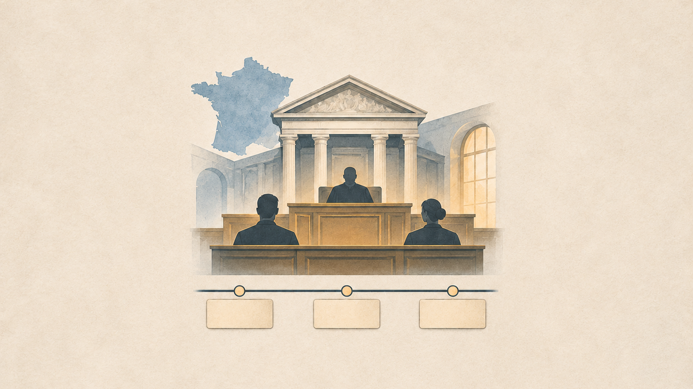

Afro-Europe · court · 18 November 2026
Michel Zecler trial examines violence and police reports.
Three French officers are on trial over the 2020 arrest of the Black music producer; the court is examining disputed accounts, apologies and an allegedly false arrest report.

What We Know
AFP reported that three officers face charges including intentional violence committed as a group and forgery related to an official report. Le Monde reported that the defendants were questioned about the violence and offered apologies for some blows while giving disputed explanations.
Why It Matters
The case tests how surveillance footage, police reports, witness accounts and allegations of racial bias are weighed in court.
What We’re Watching
- The court’s findings on the violence and arrest report.
- How video evidence is weighed against witness and defendant accounts.
- The eventual judgment and any sentencing.